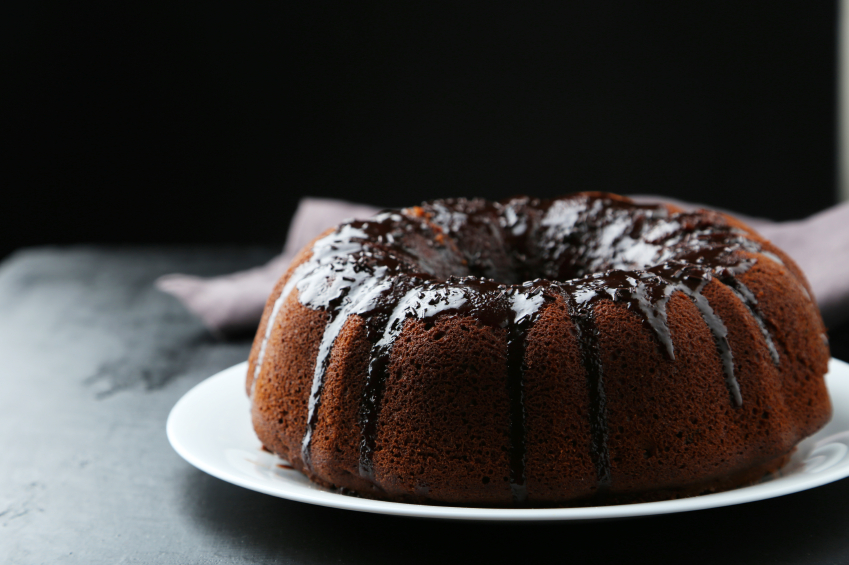

D&M bakery
"Create your perfect day"
Cooking with love, baking with heart
Our cources
ICIF has created the ITALIAN BAKERY COURSE in collaboration with the professional who will carry out the course lessons, the chef, baker and pastry chef Davide Damiano, gastronomic consultant in several high-level restaurants, including Michelin Starred Restaurants, of Piedmont region, developer of new products for intolerant people in collaboration with the companies dedicated to this sector, thanks to the tasting of flour mixtures for gluten intolerances with high content of vegetable food fibers, as well as mixtures for other types of intolerances. He has a long national and international professional experience, combined with a solid theoretical preparation given by years of study in the field of food chemistry, which he has practically developed through numerous internships at various laboratories.
Servises, we provide
ICIF has created the ITALIAN BAKERY COURSE in collaboration with the professional who will carry out the course lessons, the chef, baker and pastry chef Davide Damiano, gastronomic consultant in several high-level restaurants, including Michelin Starred Restaurants, of Piedmont region, developer of new products for intolerant people in collaboration with the companies dedicated to this sector, thanks to the tasting of flour mixtures for gluten intolerances with high content of vegetable food fibers, as well as mixtures for other types of intolerances. He has a long national and international professional experience, combined with a solid theoretical preparation given by years of study in the field of food chemistry, which he has practically developed through numerous internships at various laboratories.
Our product
ICIF has created the ITALIAN BAKERY COURSE in collaboration with the professional who will carry out the course lessons, the chef, baker and pastry chef Davide Damiano, gastronomic consultant in several high-level restaurants, including Michelin Starred Restaurants, of Piedmont region, developer of new products for intolerant people in collaboration with the companies dedicated to this sector, thanks to the tasting of flour mixtures for gluten intolerances with high content of vegetable food fibers, as well as mixtures for other types of intolerances. He has a long national and international professional experience, combined with a solid theoretical preparation given by years of study in the field of food chemistry, which he has practically developed through numerous internships at various laboratories.